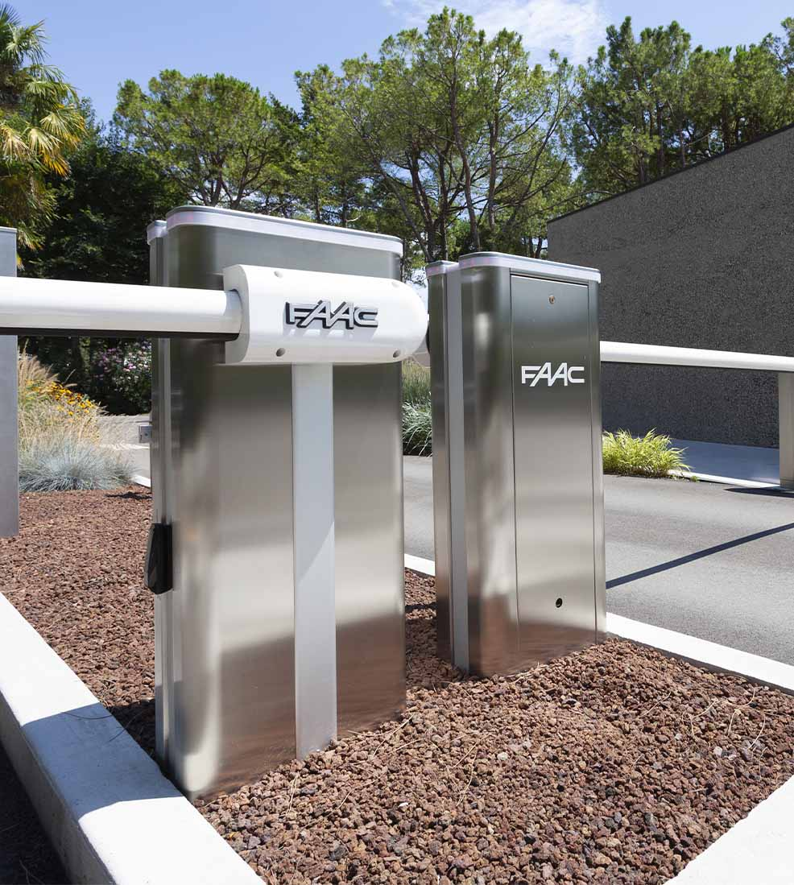
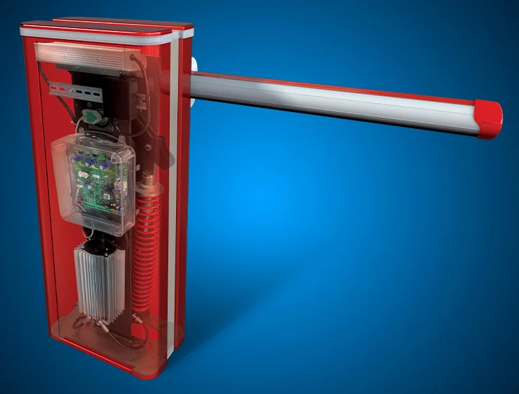
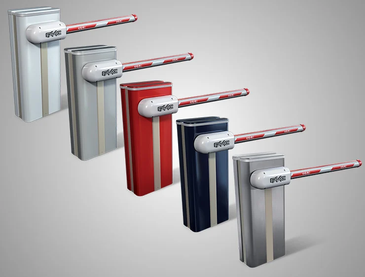

Barrera hidraulica rapida para pasos hasta 8mts a 36v.
FAAC B680H è una barriera automatica rivoluzionaria che unisce il motore Brushless alla tecnologia oleodinamica, offrendo prestazioni eccezionali anche in condizioni di uso continuo.
Le sue molle a durata “infinita” sono progettate per superare i 2.000.000 di cicli di apertura e chiusura, rendendo FAAC B680H la soluzione perfetta per regolare traffico veicolare intenso in ogni contesto: residenziale, condominiale e industriale.
Il cofano rimovibile della barriera FAAC B680H è disponibile in quattro eleganti colori RAL (Rosso Fuoco, Blu Acciaio, Bianco Puro, Grigio Alluminio) e nella versione in acciaio INOX.
In questo modo puoi personalizzare la barriera per integrarla perfettamente con l’estetica dell’ambiente in cui verrà installata.
FAAC B680H è progettata con un solo modello di barriera in grado di gestire tutte le lunghezze di asta, riducendo così i costi di gestione e migliorando l’efficienza operativa.


La barriera automatica FAAC B680H combina una pompa idraulica con un motore brushless 24V.
Questo sistema innovativo consente di movimentare sia aste lunghe che corte con estrema rapidità e in modo continuativo, anche nelle condizioni di traffico più intenso.

Le aste della barriera FAAC B614, disponibili in versione tonda e rettangolare , sono dotate di un profilo in gomma antiurto per minimizzare l'impatto in caso di collisione.
Gli adesivi catarifrangenti e l’illuminazione a LED (opzionale) sull’intera lunghezza della sbarra garantiscono piena visibilità anche in condizioni di scarsa luminosità.
Per una gestione ancora più sicura del traffico veicolare, la barriera FAAC B614 può anche essere dotata di un lampeggiante semaforico integrato.
Información técnica